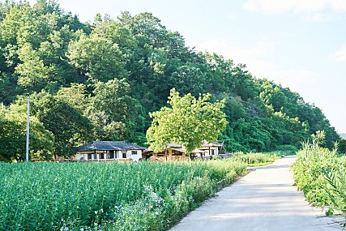
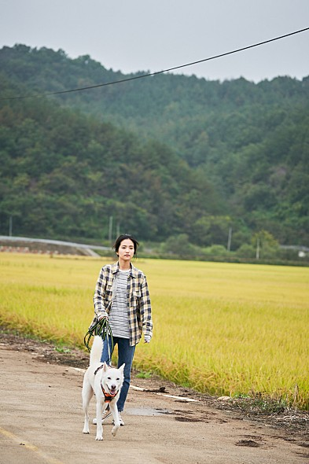
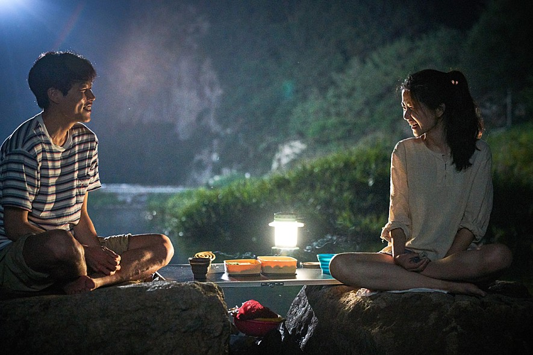
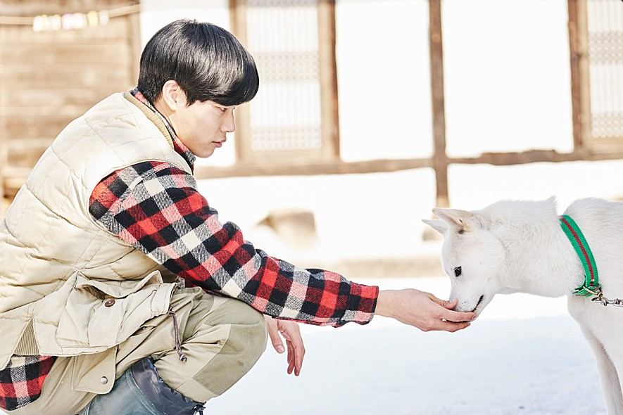
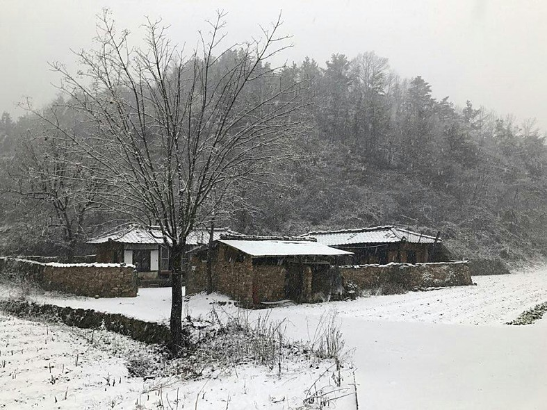

"잠시 쉬어가도, 달라도, 평범해도 괜찮아!
모든 것이 괜찮은 청춘들의 아주 특별한 사계절 이야기”


시험, 연애, 취업… 뭐하나 뜻대로 되지 않는 일상을 잠시 멈추고
고향으로 돌아온 혜원은 오랜 친구인 재하와 은숙을 만난다
고향으로 돌아온 혜원은 오랜 친구인 재하와 은숙을 만난다
남들과는 다른, 자신만의 삶을 살기 위해 고향으로 돌아온 ‘재하’,
평범한 일상에서의 일탈을 꿈꾸는 ‘은숙’과 함께 고향에서.
평범한 일상에서의 일탈을 꿈꾸는 ‘은숙’과 함께 고향에서.


직접 키운 농작물로 한끼 한끼를 만들어 먹으며
겨울에서 봄, 그리고 여름, 가을을 보내고 다시 겨울을 맞이하게 된 혜원.
겨울에서 봄, 그리고 여름, 가을을 보내고 다시 겨울을 맞이하게 된 혜원.
그렇게 특별한 사계절을 보내며 고향으로 돌아온 진짜 이유를 깨닫게 된 혜원은
새로운 봄을 맞이하기 위한 첫 발을 내딛는데…
새로운 봄을 맞이하기 위한 첫 발을 내딛는데…


봄, 여름, 가을, 겨울
사계절처럼 익어가는 나의 추억들과 그 기억들에 대한 기록
사계절처럼 익어가는 나의 추억들과 그 기억들에 대한 기록